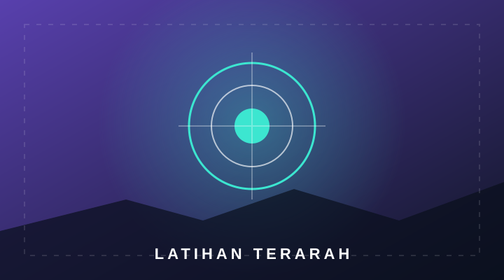
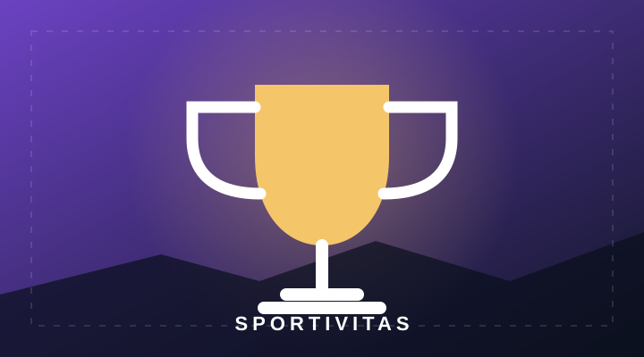
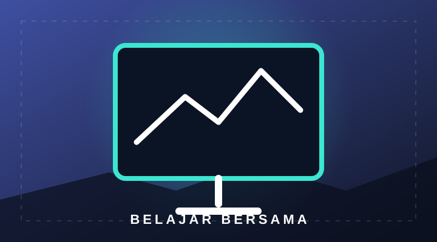
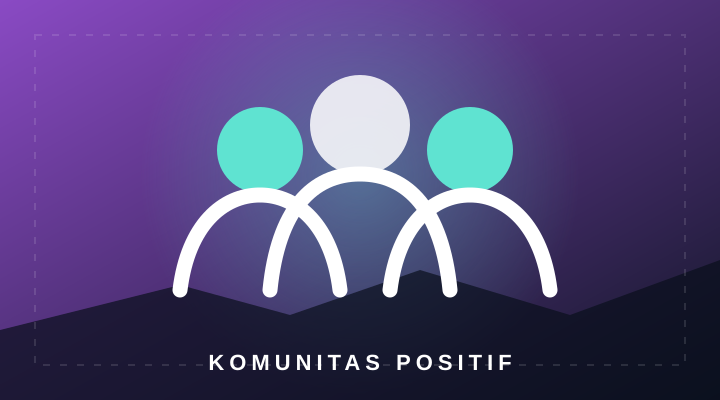

LATIHAN
Training Session
Latihan rutin untuk meningkatkan mekanik, pemahaman peran, komunikasi, dan koordinasi permainan.
ACTIVITY CATALOG / 03
Rangkaian ide kegiatan untuk belajar, berlatih, berkompetisi, dan membangun komunitas esports yang positif.
FIND YOUR PLAY
Enam program berikut adalah rancangan contoh untuk memenuhi katalog proyek UTS. Sesuaikan nama, jadwal, dan pelaksanaannya dengan program kerja UKM yang sebenarnya.
Menampilkan 6 rancangan program.

Latihan rutin untuk meningkatkan mekanik, pemahaman peran, komunikasi, dan koordinasi permainan.
Pertandingan persahabatan untuk menguji strategi tim dan membiasakan anggota menghadapi tekanan kompetitif.

Konsep turnamen antarmahasiswa untuk membangun sportivitas, pengalaman bertanding, dan kebersamaan kampus.

Sesi berbagi tentang analisis permainan, penyusunan strategi, komunikasi, dan pengambilan keputusan.
Evaluasi rekaman pertandingan untuk mengenali kekuatan, kesalahan, dan peluang perbaikan tim.

Pertemuan santai untuk mempererat relasi anggota, bertukar pengalaman, dan menyambut mahasiswa baru.
Coba kata kunci atau kategori yang berbeda.